Formulario rapido di Embedding/CLAP, VAE/Codec, Generazione e API audiolab
5.1 Introduzione
Nel capitolo precedente abbiamo confrontato feature progettate a mano (MFCC) e una rete convoluzionale 2D, usando gli stessi dati e un protocollo comune. Ora passiamo all’uso di modelli preaddestrati: sistemi che hanno già imparato rappresentazioni ricche da centinaia di migliaia di ore di audio e che possiamo riutilizzare senza ricominciare l’addestramento da zero.
Le direzioni principali sono due:
Capire e cercare: trasformare un suono in un vettore numerico (embedding) e confrontarlo con altri suoni o direttamente con una frase di testo (CLAP).
Comprimere, trasformare e produrre: comprimere l’audio in uno spazio latente continuo per ricostruirlo o interpolarlo (VAE / RAVE), discretizzarlo in sequenze di simboli (EnCodec) oppure generare un nuovo suono a partire da una descrizione testuale (MusicGen, AudioLDM).
Questi compiti possono condividere mattoni architetturali, ma non usano lo stesso spazio di rappresentazione. Un embedding semantico può scartare la fase e i dettagli fini perché gli basta riconoscere che cosa sta suonando; un codec o un VAE devono invece conservare tutto ciò che serve al decoder per restituire un audio ascoltabile; un generatore deve imparare quali rappresentazioni corrispondono a suoni plausibili e come costruirle passo dopo passo.
Il capitolo privilegia l’intuizione visiva, gli ascolti e la verifica sperimentale con pochissima matematica; per chi desidera guardare dentro le scatole nere, tre box di approfondimento opzionali raccontano in modo semplice Transformer e Attention, Autoencoder e VAE e il processo di diffusione.
from pathlib import Pathimport sys, jsonimport numpy as npimport matplotlib.pyplot as pltimport librosaimport librosa.displayimport soundfile as sffrom IPython.display import Audio, displayROOT =next(p for p in (Path.cwd(), *Path.cwd().parents)if (p /"lab-2026/audiolab").is_dir())sys.path.insert(0, str(ROOT /"lab-2026"))import audiolab as alcartella = al.generation.OFFLINE_DIRplt.rcParams.update({"figure.figsize": (9, 4), "font.size": 11,"axes.spines.top": False, "axes.spines.right": False})
5.3 Quattro ruoli da non confondere
Prima di entrare nei singoli modelli è fondamentale distinguere quattro ruoli diversi che spesso coesistono dentro la stessa pipeline:
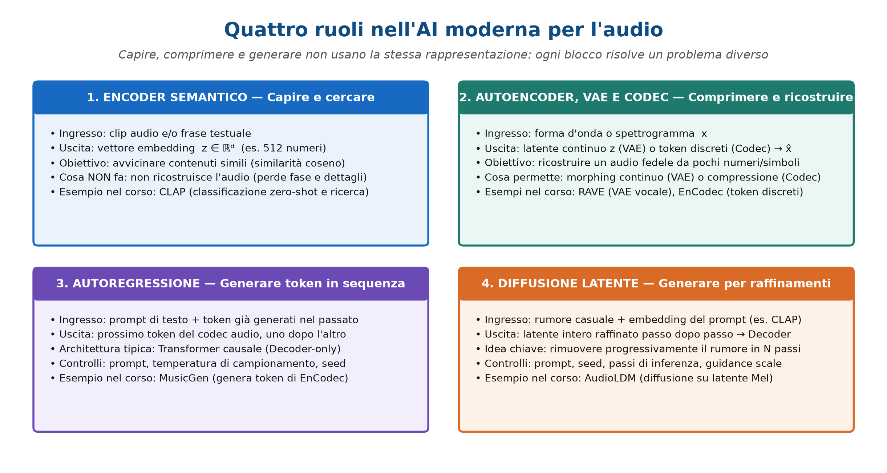
Componente
Che cosa fa
Che cosa non garantisce
Riferimento nel capitolo
1. Encoder semantico
Riassume un suono o un testo in un vettore \(\mathbf{z}\in\mathbb{R}^d\) per confrontarne il significato
Ricostruzione dell’audio (perde fase e dettagli fini)
CLAP
2. Autoencoder, VAE e Codec
Comprimono l’audio in un latente continuo (\(\mathbf{z}\)) o in token discreti e lo ricostruiscono
Composizione autonoma di brani o comprensione del testo
RAVE, EnCodec
3. Generatore autoregressivo
Predice il prossimo token audio uno alla volta a partire dal passato e dal prompt
Controllo indipendente di ogni singolo dettaglio acustico
MusicGen
4. Generatore per diffusione
Parte dal rumore e raffina iterativamente l’intera mappa latente guidato dal prompt
Rispetto infallibile di ogni vincolo testuale (es. conteggio esatto)
AudioLDM
Un sistema moderno può contenere un autoencoder, un transformer e un processo di diffusione insieme: non sono tre alternative sullo stesso piano. L’autoencoder o il codec definiscono lo spazio compresso; il transformer è un’architettura di rete; l’autoregressione e la diffusione sono i procedimenti generativi.
5.4 Embedding: dai dati ai vettori
Un embedding è una rappresentazione numerica appresa da una rete neurale: un oggetto complesso — un suono, un’immagine o una frase — viene trasformato da un encoder\(E\) in un punto di uno spazio vettoriale a \(d\) dimensioni:
L’obiettivo dell’addestramento è fare in modo che la geometria dello spazio rifletta la somiglianza di contenuto: due suoni semanticamente simili (ad esempio due registrazioni diverse di un cane che abbaia) vengono portati in vettori vicini, mentre suoni diversi (un abbaio e un aspirapolvere) finiscono lontani.
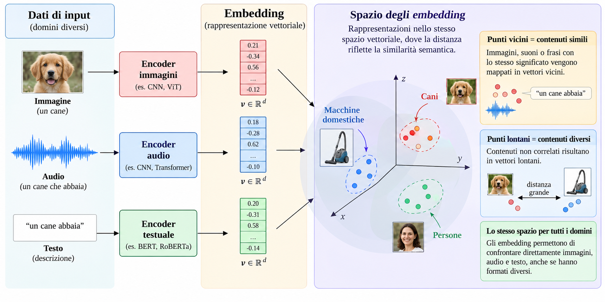
Per misurare quanto due embedding \(\mathbf{a}, \mathbf{b} \in \mathbb{R}^d\) puntino nella stessa direzione si usa quasi sempre la similarità coseno, che equivale al prodotto scalare dopo aver normalizzato i due vettori a lunghezza unitaria:
Vale \(+1\) quando i due vettori hanno la stessa direzione, \(0\) quando sono ortogonali e \(-1\) quando sono opposti. Attenzione: la similarità coseno non è una probabilità e non misura la qualità sonora del file.
Come si riutilizza un modello preaddestrato
Quando disponiamo di un encoder preaddestrato su grandi collezioni audio, possiamo sfruttarlo in tre modi principali senza dover riaddestrare una rete da zero:
Modalità
Che cosa si aggiorna
Che cosa serve
Classificatore leggero / Linear probing
Solo un classificatore finale (es. strato lineare o Random Forest), lasciando l’encoder congelato
Pochi esempi etichettati del nuovo compito
Fine-tuning
Parte o tutti i pesi dell’encoder insieme alla testa finale
Più dati etichettati, validazione attenta e più calcolo (GPU)
Zero-shot audio-testo
Nessun peso sul compito bersaglio
Descrizioni testuali candidate e un modello già allineato (es. CLAP)
5.5 CLAP: mettere in relazione suoni e parole
CLAP (Contrastive Language-Audio Pretraining) impara a proiettare segnali audio e descrizioni testuali nello stesso spazio vettoriale condiviso (di dimensione \(d = 512\)). L’idea, analoga a quella di CLIP per immagini e testo, è addestrare insieme due rami separati:
Ramo audio: trasforma lo spettrogramma log-Mel del suono in un embedding audio \(\mathbf{e}_a \in \mathbb{R}^{512}\);
Ramo testuale: trasforma i token della frase in un embedding testuale \(\mathbf{e}_t \in \mathbb{R}^{512}\).
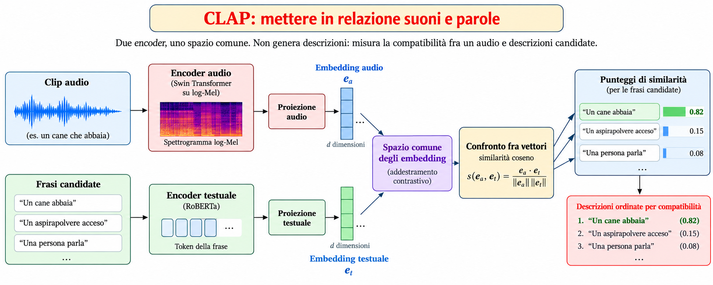
Durante l’addestramento contrastivo su centinaia di migliaia di coppie (audio, didascalia), il modello impara ad avvicinare ogni registrazione alla propria descrizione e ad allontanarla dalle descrizioni degli altri suoni del gruppo.
Classificazione zero-shot e interpretazione dei punteggi
In fase di utilizzo (inferenza) i pesi di CLAP restano fissi. Forniamo un file audio e un elenco di frasi candidate (ad esempio "The sound of a dog barking.", "The sound of a guitar playing a note.", "The sound of a person speaking."): il modello calcola la similarità coseno fra l’embedding dell’audio e ciascuna frase, ordinandole per compatibilità.
Questo permette la classificazione zero-shot: definiamo le classi semplicemente scrivendole a parole, senza addestrare un classificatore su esempi del compito. Occorre però ricordare tre regole fondamentali:
CLAP non scrive una didascalia da solo: sceglie sempre fra le frasi candidate che gli passiamo noi.
Se manca la descrizione corretta, vince comunque la meno lontana: il massimo relativo non certifica che la frase sia vera in assoluto.
Anche applicando una softmax ai punteggi, il risultato dipende dall’insieme delle frasi candidate: togliere o riformulare un’alternativa cambia tutti i numeri.
NotaDemo 1 — Una matrice audio-testo da CLAP reale
Usiamo gli embedding precalcolati con il checkpoint laion/clap-htsat-unfused (al.CLAP_MODEL_ID) su tre suoni reali del corso (parlato, nota di chitarra, abbaio) e quattro descrizioni candidate (al.PHRASES).
speech1.wav → The sound of a person speaking.
Guitar_C4.wav → The sound of a guitar playing a note.
100032-3-0-0.mp3 → The sound of a dog barking.
Nel Laboratorio (Esercizio 1) verificheremo che cosa succede quando rimuoviamo dall’elenco la descrizione corretta dell’abbaio.
ConsiglioApprofondimento facoltativo — Il Transformer e la Self-Attention per l’audio
Dentro quasi tutti i modelli audio moderni — dagli encoder di CLAP (Swin Transformer / HTS-AT per l’audio e RoBERTa per il testo) fino a Whisper e MusicGen — batte la stessa architettura: il Transformer. Vediamo in modo intuitivo come funziona, senza perdersi nei dettagli algebrici.
1. Perché superare le reti ricorrenti?
Prima del Transformer, le sequenze (testo o audio) venivano lette un passo alla volta da reti ricorrenti (RNN/LSTM) che aggiornavano una memoria compressa del passato. Questo aveva due colli di bottiglia: non si poteva elaborare tutta la sequenza in parallelo sulla GPU, e i dettagli lontani nel tempo tendevano a sbiadire. Il Transformer sostituisce la lettura sequenziale con il meccanismo di Attention: ogni elemento della sequenza può guardare direttamente qualsiasi altro elemento, anche distante secondi.
2. L’idea dell’Attention: «chi guarda chi»
Quando il modello analizza un frame dello spettrogramma (o una parola), decide a quali altri frame prestare attenzione usando tre vettori appresi per ciascun elemento:
Query (\(Q\), la domanda): «che tipo di contesto sto cercando?»
Key (\(K\), l’etichetta): «che cosa contengo e posso offrire agli altri?»
Value (\(V\), il contenuto): «quale informazione trasmetto se vengo selezionato?»
Il modello confronta la Query di ciascun elemento con le Key di tutti gli altri (tramite prodotto scalare normalizzato con softmax) ottenendo dei pesi di attenzione che sommano a \(1\), e costruisce l’uscita come media pesata dei Value:
Come mostra l’esempio seguente su una frase, l’attenzione non è uniforme: quando il modello elabora "barked" (ha abbaiato), concentra il peso su "dog" (chi ha compiuto l’azione). Nell’audio avviene lo stesso: l’attacco di una nota può collegarsi alle sue armoniche o alla coda riverberante anche a distanza di molti frame.
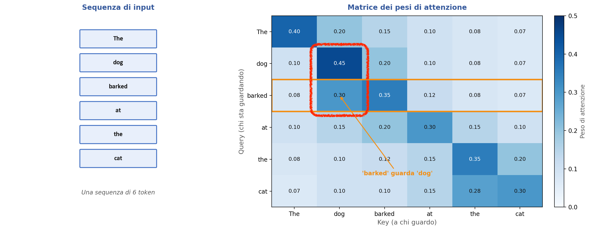
Usando più «teste» in parallelo (Multi-Head Attention), una testa può seguire i dettagli locali (transienti, consonanti) mentre un’altra segue la struttura globale (intonazione, ritmo). Poiché l’attenzione da sola non conosce l’ordine dei frame, all’ingresso si somma sempre una codifica posizionale (positional encoding).
3. Le tre famiglie di Transformer nell’audio
Impilando più blocchi composti da Attention + Rete Feed-Forward locale si ottengono tre varianti principali:
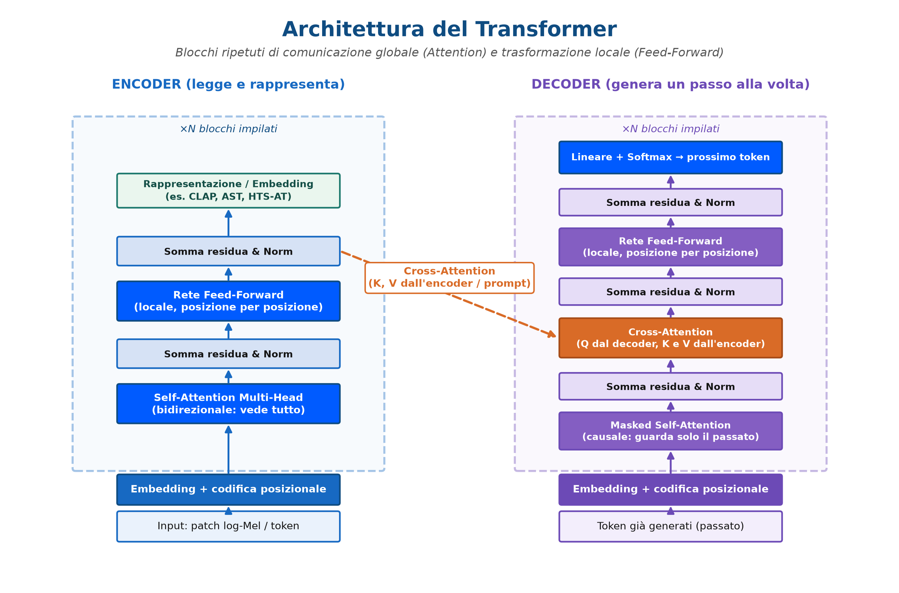
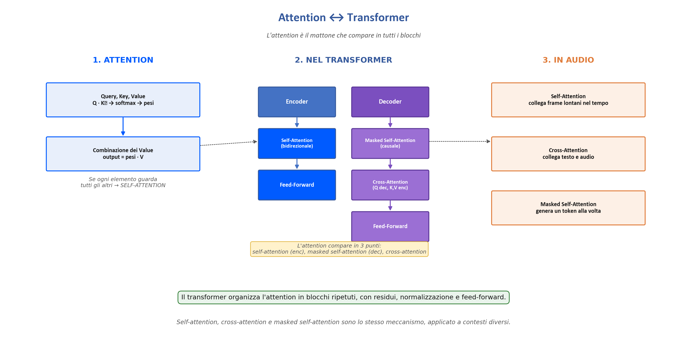
Famiglia
Come guarda la sequenza
Compito ideale
Esempi nel mondo audio
Encoder-only
Self-attention bidirezionale (vede tutto il clip insieme)
Capire, classificare, estrarre embedding
CLAP (HTS-AT su patch log-Mel e RoBERTa sul testo), AST
Decoder-only
Masked self-attention causale (vede solo il passato)
Generare un token dopo l’altro
MusicGen, AudioLM
Encoder-Decoder
L’encoder legge l’ingresso; il decoder genera l’uscita guardando l’encoder via Cross-Attention
Tradurre da una modalità all’altra (es. parlato \(\to\) testo)
Whisper (ASR), SpeechT5 (TTS)
In particolare, dentro LAION-CLAP lo spettrogramma log-Mel viene diviso in piccoli tasselli (patch) ed elaborato da uno Swin Transformer (che calcola l’attenzione a finestre scorrevoli per risparmiare memoria), mentre la frase viene letta da RoBERTa:
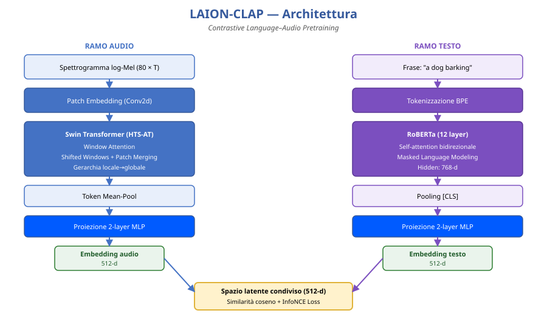
5.6 Comprimere e ricostruire: autoencoder, VAE e codec
Un encoder semantico come CLAP conserva solo ciò che serve a distinguere un concetto da un altro: da quei 512 numeri non possiamo riascoltare il file originale. Quando invece vogliamo ricostruire, modificare o generare il segnale audio, ci serve un modello dotato sia di un encoder (che comprime) sia di un decoder (che ricostruisce).
L’autoencoder e il collo di bottiglia
Un autoencoder comprime l’ingresso \(x\) attraverso un collo di bottiglia (bottleneck) in un vettore latente \(\mathbf{z} = f_\theta(x)\) molto più piccolo dell’originale, e addestra contemporaneamente un decoder \(g_\phi(\mathbf{z})\) a ricostruire \(\hat{x} \approx x\) riducendo l’errore di ricostruzione \(\|x - \hat{x}\|^2\).
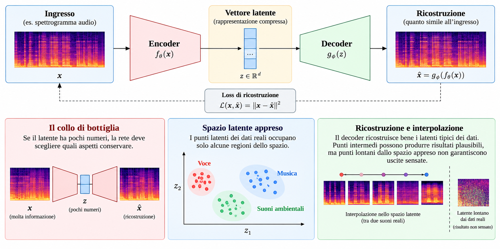
Poiché nel collo di bottiglia passano pochissimi numeri, la rete è costretta a scartare la ridondanza e a conservare gli aspetti strutturali del suono. Tuttavia, un autoencoder standard non organizza lo spazio latente in modo uniforme: i dati reali formano «isole» separate da zone vuote. Se scegliamo un punto a caso o passiamo in mezzo a due isole, il decoder può produrre artefatti privi di senso.
Il VAE: rendere lo spazio latente continuo e navigabile
Il VAE (Variational Autoencoder, autoencoder variazionale) risolve questo problema aggiungendo una regolarizzazione probabilistica. Invece di spedire ogni suono in un singolo punto isolato, l’encoder produce una piccola «nuvola» descritta da una media\(\boldsymbol{\mu}\) e da una dispersione\(\boldsymbol{\sigma}\), da cui il latente viene estratto con un piccolo disturbo gaussiano \(\boldsymbol{\varepsilon} \sim \mathcal{N}(\mathbf{0}, \mathbf{I})\):
Durante l’addestramento il VAE bilancia due obiettivi: ricostruire bene il suono e mantenere tutte le nuvole vicine a una distribuzione normale standard priva di buchi. Questo rende lo spazio latente liscio e continuo, regalandoci due operazioni fondamentali:
Interpolazione (morphing): muovendoci in linea retta tra i latenti di due suoni \(\mathbf{z}_\alpha = (1-\alpha)\mathbf{z}_1 + \alpha\mathbf{z}_2\), anche i punti intermedi cadono in regioni valide e producono una trasformazione timbrica graduale;
Campionamento: possiamo estrarre nuovi punti dallo spazio latente e decodificarli in suoni plausibili.
Un esempio celebre nella sintesi musicale è RAVE (Realtime Audio Variational autoEncoder, sviluppato all’IRCAM), che applica un VAE multiscala direttamente all’audio a \(48\,\text{kHz}\) per ricostruire e trasformare timbri in tempo reale:
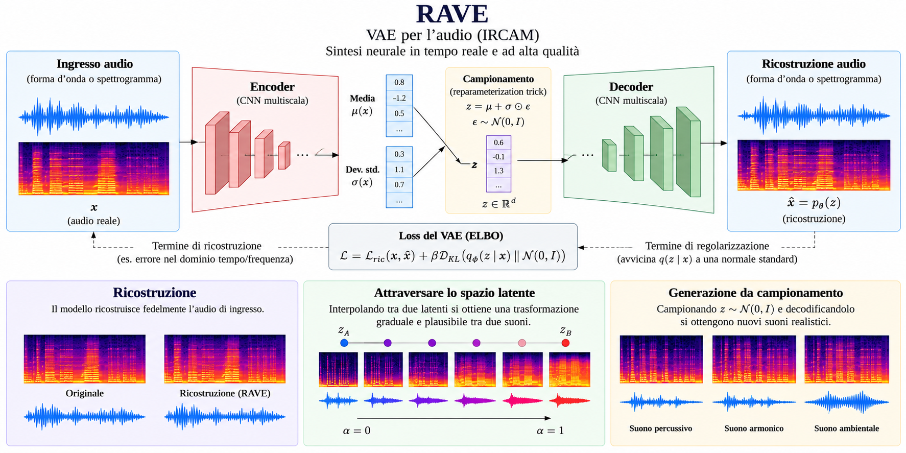
Codec neurali e token discreti (EnCodec)
Mentre un VAE mantiene un latente continuo (numeri reali), un codec neurale come EnCodec introduce una quantizzazione vettoriale (codebook): ogni vettore latente continuo prodotto dall’encoder viene sostituito con l’indice intero del prototipo più vicino dentro uno o più dizionari appresi.
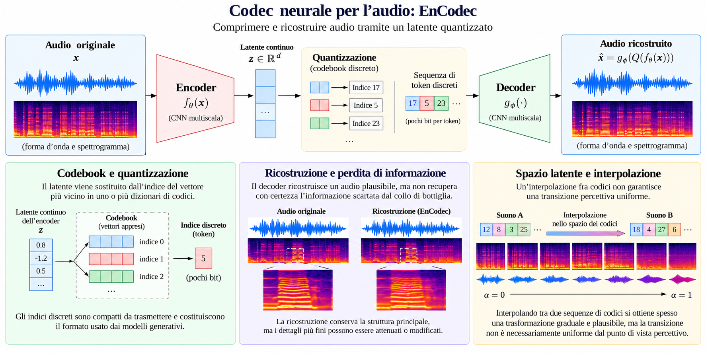
Sostituire vettori continui con indici discreti (token) comporta due grandi vantaggi: permette di trasmettere l’audio a bassissimo bitrate e trasforma il suono in una sequenza di simboli interi, esattamente come le parole di un testo, su cui possiamo poi addestrare un modello linguistico (come vedremo subito con MusicGen).
ConsiglioApprofondimento facoltativo — Come funzionano Autoencoder, VAE e quantizzazione (RVQ)
Guardiamo più da vicino le tre idee chiave che distinguono autoencoder, VAE e codec neurali:
Perché il campionamento con \(\boldsymbol{\mu}\) e \(\boldsymbol{\sigma}\) elimina i «buchi» nello spazio latente? In un autoencoder classico, la rete può memorizzare due suoni vicini spedendoli in punti lontanissimi dello spazio latente senza pagare alcuna penalità. Nel VAE, invece, l’encoder è costretto ad aggiungere rumore (\(\boldsymbol{\sigma}\odot\boldsymbol{\varepsilon}\)) attorno a \(\boldsymbol{\mu}\), e un termine di regolarizzazione (divergenza di Kullback–Leibler, \(\mathcal{L}_{\mathrm{KL}}\)) tira tutte le distribuzioni verso una campana gaussiana centrata nell’origine \(\mathcal{N}(\mathbf{0}, \mathbf{I})\). Poiché il decoder deve imparare a ricostruire lo stesso suono da tutta la nuvoletta attorno a \(\boldsymbol{\mu}\), le nuvolette di suoni simili si sovrappongono dolcemente e spariscono le zone vuote tra un suono e l’altro.
Come fa RAVE a generare audio nitido a 48 kHz da soli 11 numeri ogni 43 ms? Se si misura l’errore di ricostruzione campione per campione sulla forma d’onda, un VAE tende a produrre suoni sordi perché media sulle fasi incerte. RAVE supera questo limite misurando l’errore sugli spettrogrammi a più risoluzioni (multi-scale spectral loss): chiede al decoder di rispettare l’inviluppo energetico e le armoniche a diverse scale temporali, lasciandolo libero di rigenerare una fase coerente.
Come funziona la quantizzazione in un codec neurale (Codebook e RVQ)? Un singolo dizionario (codebook) con poche voci introdurrebbe un errore di approssimazione troppo forte. Codec come EnCodec e SoundStream usano perciò la Residual Vector Quantization (RVQ): un primo dizionario cattura la struttura grossolana del latente; poi si calcola lo scarto residuo e lo si quantizza con un secondo dizionario, e così via in cascata. Ecco una miniatura in Python dell’operazione base di un singolo codebook, che assegna ogni vettore continuo al prototipo più vicino:
Sequenza di token discreti trasmessa al decoder: [0 1 2 3]
NotaDemo 2 — Un VAE audio al lavoro: ricostruzione e morphing con RAVE
La demo usa i materiali reali prodotti con RAVE (voice-multi, addestrato su voci parlate e cantate a \(48\,\text{kHz}\)), che comprime ogni blocco di \(2048\) campioni (\(\approx 42{,}7\,\text{ms}\)) in 11 coordinate latenti.
Mostra il codice
base = ROOT /"lab-2026/materiali/05-vae"meta = json.loads((base /"provenienza.json").read_text())voce1, sr = sf.read(base /"voce1.wav", dtype="float32")ric1, _ = sf.read(base /"voce1_ricostruita.wav", dtype="float32")coppia = [librosa.feature.melspectrogram(y=y, sr=sr, n_fft=2048, hop_length=512, n_mels=80) for y in (voce1, ric1)]rif =max(float(M.max()) for M in coppia)fig, axes = plt.subplots(2, 1, figsize=(9, 4.4), constrained_layout=True)for ax, M, tit inzip(axes, coppia, ["Voce 1 originale", "Ricostruita con RAVE (da 11 numeri ogni 2048 campioni)"]): im = librosa.display.specshow(librosa.power_to_db(M, ref=rif, top_db=None), sr=sr, hop_length=512, x_axis="time", y_axis="mel", ax=ax, vmin=-80, vmax=0, cmap="magma") ax.set_title(tit)fig.colorbar(im, ax=axes, label="Potenza [dB]")plt.show()morphs = [sf.read(base /f"morph_{i}.wav", dtype="float32")[0] for i inrange(9)]M = [librosa.feature.melspectrogram(y=y, sr=sr, n_fft=2048, hop_length=512, n_mels=80) for y in morphs]rif =max(float(x.max()) for x in M)fig, axes = plt.subplots(1, 9, figsize=(13, 2.2), sharey=True, constrained_layout=True)for idx, (ax, x, a) inenumerate(zip(axes, M, meta["alpha"])): librosa.display.specshow(librosa.power_to_db(x, ref=rif, top_db=None), sr=sr, hop_length=512, y_axis="mel", ax=ax, vmin=-80, vmax=0, cmap="magma")if idx >0: ax.set_ylabel("") ax.set_title(f"α={a:.2g}", fontsize=8.5)plt.show()z1 = np.load(base /"latenti.npz")["voce1"]print(f"Latenti: {z1.shape[0]} numeri ogni blocco da 2048 campioni | modello: {meta['file']}")
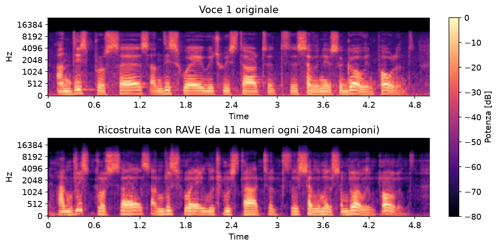
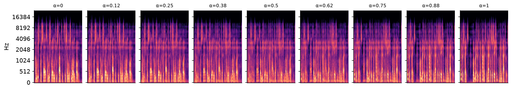
Latenti: 11 numeri ogni blocco da 2048 campioni | modello: voice-multi-b2048-r48000-z11.ts
Osserva. La ricostruzione conserva fedelmente l’inviluppo energetico (correlazione \(0{,}951\)) e la struttura armonica (similarità Mel \(0{,}924\)), pur rigenerando la fase. La striscia inferiore mostra i 9 passi di morphing\(\mathbf{z}_\alpha = (1-\alpha)\mathbf{z}_1 + \alpha\mathbf{z}_2\) fra due voci diverse: nel Laboratorio (Esercizi 2 e 3) ascolteremo l’intera catena, ne misureremo la traiettoria MFCC e verificheremo che cosa accade passando un abbaio dentro questo modello vocale.
5.7 Generare l’audio: autoregressione e diffusione latente
Una volta compresso l’audio in una sequenza di token discreti (con un codec come EnCodec) oppure in una mappa latente continua (con il VAE di uno spettrogramma), come fa un modello generativo a inventare un suono nuovo a partire da una richiesta testuale (prompt)? Le strategie principali sono due.
1. Generare token uno dopo l’altro (autoregressione: MusicGen)
Un generatore autoregressivo funziona esattamente come un modello linguistico per il testo: legge il prompt e i token audio già prodotti fino all’istante \(t-1\), stima la probabilità del prossimo token \(z_t\), ne estrae uno e lo aggiunge alla coda. Al termine, il decoder del codec trasforma la sequenza di token nella forma d’onda finale.
flowchart LR
P[Prompt testuale] --> M[Transformer causale]
C[Token precedenti] --> M
M --> S[Campionamento del prossimo token]
S --> C
C --> D[Decoder del codec EnCodec]
D --> A[Forma d'onda audio]
È la strada seguita da MusicGen: un Transformer causale (Decoder-only) genera i token discreti di EnCodec condizionati dal testo. Durante l’estrazione del prossimo token possiamo regolare due controlli:
la temperatura (\(\tau > 0\)): valori bassi concentrano la scelta sui token più probabili (uscita più prevedibile e stabile), valori alti appiattiscono la distribuzione aumentando la varietà ma anche il rischio di incoerenza;
il seed: il numero intero che inizializza il generatore pseudocasuale.
2. Generare per raffinamenti successivi dal rumore (diffusione latente: AudioLDM)
I modelli di diffusione adottano un’idea completamente diversa: invece di scrivere il brano da sinistra a destra un pezzetto alla volta, creano l’intero clip simultaneamente partendo da puro rumore casuale e ripulendolo passo dopo passo, come uno scultore che sbozza prima la forma generale e poi rifinisce i dettagli.
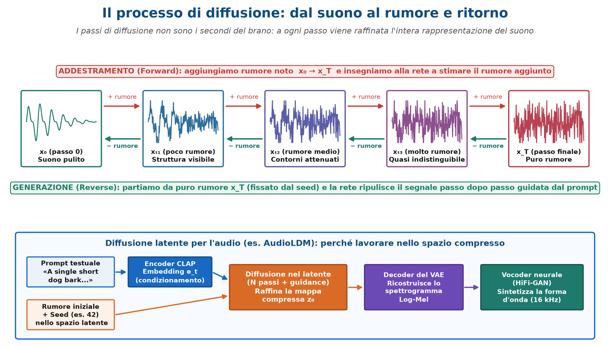
Il principio si basa su due fasi speculari:
Fase di corruzione (Forward, durante l’addestramento): prendiamo un suono reale pulito \(x_0\) (o la sua mappa latente) e gli mescoliamo quote crescenti di rumore gaussiano fino a trasformarlo in puro rumore indistinguibile \(x_T\). Alleniamo quindi una rete neurale a guardare un passo rumoroso \(x_t\) e a indovinare il rumore che è stato aggiunto.
Fase di generazione (Reverse, in inferenza): partiamo da una matrice di puro rumore casuale \(x_T\) (determinata dal seed) e, per \(N\) passi consecutivi (es. \(25\) passi), chiediamo alla rete di sottrarre un po’ di rumore orientando la pulizia verso l’embedding del prompt testuale.
ImportanteNon confondere i passi di diffusione con i secondi del brano!
L’indice \(t\) della diffusione conta gli stadi di pulizia, non gli istanti temporali dell’audio: già al primo passo la matrice ha la durata dell’intero clip (es. 5 secondi), ma è immersa nel rumore.
Poiché lavorare direttamente sui campioni della forma d’onda sarebbe lentissimo, modelli come AudioLDM eseguono la diffusione nello spazio latente compresso di un VAE addestrato su spettrogrammi log-Mel, usando l’embedding di CLAP per condizionare la generazione.
ConsiglioApprofondimento facoltativo — Il processo di diffusione passo dopo passo
Vediamo con una semplice simulazione visiva e due sole formule come lavorano i controlli di un modello di diffusione latente come AudioLDM:
Come si mescola il rumore nel processo Forward? Dato un segnale pulito \(x_0\) a varianza unitaria e un rumore gaussiano standard \(\varepsilon \sim \mathcal{N}(0, 1)\), uno stadio rumoroso con quota di rumore \(q \in [0, 1]\) si ottiene semplicemente come combinazione pesata: \[x_q = \sqrt{1 - q}\,x_0 + \sqrt{q}\,\varepsilon.\] Osserviamo l’effetto su una sinusoide pura al crescere della quota di rumore \(q\) da \(0\%\) a \(100\%\):
Come fa la rete a seguire il prompt testuale? La Classifier-Free Guidance (CFG) Ad ogni passo di pulizia, la rete di denoising (spesso una U-Net con strati di Cross-Attention o un Transformer) effettua due stime: una senza guardare il prompt (direzione generica verso un suono qualsiasi) e una guardando il prompt (direzione specifica verso “un cane che abbaia”). Il parametro guidance_scale (\(w \ge 1\), ad esempio \(2{,}5\) in AudioLDM) amplifica la differenza tra le due direzioni: \[\hat{\varepsilon}_{\mathrm{guidato}} = \hat{\varepsilon}_{\mathrm{senza\ prompt}} + w \cdot \bigl(\hat{\varepsilon}_{\mathrm{con\ prompt}} - \hat{\varepsilon}_{\mathrm{senza\ prompt}}\bigr).\] Un valore di guidance troppo basso (\(w \approx 1\)) ignora quasi il prompt; un valore troppo alto forza il vincolo ma può saturare lo spettrogramma introducendo artefatti metallici e riducendo la naturalezza.
I controlli pratici della generazione
Quando usiamo un generatore testo-audio come AudioLDM, governiamo il processo attraverso cinque manopole esplicite:
Controllo
Che cosa modifica
Che cosa verificare nell’esperimento
Prompt
La richiesta semantica (tradotta in vettore da CLAP)
Presenza dell’evento, dell’ambiente e del numero di ripetizioni
Seed
L’estrazione del rumore iniziale \(\mathbf{z}_T\)
Variabilità del risultato a parità di prompt
Passi (steps)
Il numero di iterazioni di raffinamento (es. 25)
Compromesso tra tempo di calcolo e qualità (rendimenti decrescenti)
Guidance (guidance_scale)
La forza con cui il prompt orienta la pulizia
Equilibrio tra aderenza al testo e assenza di distorsioni
Durata
La dimensione temporale della mappa latente
Durata effettiva del file WAV restituito
5.8 Dal decoder alla forma d’onda e valutazione
In una pipeline come AudioLDM, il decoder del VAE restituisce uno spettrogramma di modulo in scala Mel, che non contiene la fase dei bin FFT. Come abbiamo visto nel Capitolo 2, per tornare a un file audio ascoltabile non basta colorare una matrice: serve ricostruire una forma d’onda coerente. Mentre l’algoritmo classico di Griffin–Lim stima una fase compatibile per tentativi successivi lasciando spesso un timbro fasico o metallico, i sistemi moderni impiegano un vocoder neurale (come HiFi-GAN), addestrato a sintetizzare direttamente una forma d’onda realistica a partire dallo spettrogramma Mel. La qualità finale che ascoltiamo dipende quindi da tutta la catena: generatore latente + decoder VAE + vocoder.
Come valutare un audio generato
Non esiste un singolo numero automatico che misuri se un suono generato è «buono». Nei nostri esperimenti valutiamo sempre quattro dimensioni distinte:
Criterio
Domanda guida
Evidenza da raccogliere
1. Qualità sonora
Ci sono click, fruscii di fondo, tagli netti in alta frequenza o timbri robotici?
Ascolto critico e lettura dello spettrogramma
2. Aderenza al prompt
L’evento richiesto e l’ambiente acustico indicato sono entrambi riconoscibili?
Confronto puntuale con ogni parola del prompt
3. Coerenza temporale
Il numero di eventi (es. «single») e la loro evoluzione nel tempo sono plausibili?
Conteggio degli eventi sull’inviluppo e sullo spettrogramma
4. Costo computazionale
Quanti secondi richiede generare il clip e su quale dispositivo (CPU, MPS, CUDA)?
Tempo registrato nei metadati JSON
Esperimento controllato: tre clip, una variabile alla volta
Per capire come lavora davvero AudioLDM (cvssp/audioldm-s-full-v2, mono a \(16\,\text{kHz}\), \(25\) passi, guidance \(2{,}5\)), mettiamo a confronto tre clip generati variando una sola variabile alla volta:
Clip
Prompt testuale
Seed
Confronto sperimentale
A
"A single short dog bark in a quiet dry room."
42
Riferimento (stanza asciutta)
B
"A single short dog bark in a quiet dry room."
43
Effetto del seed (stesso prompt di A, cambia solo l’estrazione casuale)
C
"A single short dog bark in a quiet reverberant room."
42
Effetto del prompt (stesso seed di A, cambia l’ambiente richiesto)
Mostra il codice
from datetime import datetime, timezoneESEGUI_GENERAZIONE =FalseDEVICE ="cpu"# "cuda" o "mps" soltanto su un ambiente predisposto e collaudatocartella = al.generation.OFFLINE_DIRif ESEGUI_GENERAZIONE: nome = datetime.now(timezone.utc).strftime("%Y%m%dT%H%M%S_%fZ") cartella = al.generate(ROOT /"output/generazione-audio"/ nome, device=DEVICE, steps=25)
Mostra il codice
clips = al.load_samples(cartella)picco =max(float(np.max(np.abs(y))) for _, y, _, _ in clips)guadagno =min(1.0, 0.8/max(picco, 1e-12))potenze = [librosa.feature.melspectrogram(y=y, sr=sr, n_fft=1024, hop_length=256, n_mels=64) for _, y, sr, _ in clips]ref =max(float(s.max()) for s in potenze)fig, axes = plt.subplots(3, 1, figsize=(9.5, 6.6), constrained_layout=True)for ax, (nome, y, sr, meta), S inzip(axes, clips, potenze): db = librosa.power_to_db(S, ref=max(ref, 1e-12), top_db=None) im = librosa.display.specshow(db, sr=sr, hop_length=256, x_axis="time", y_axis="mel", ax=ax, vmin=-80, vmax=0, cmap="magma") ax.set_title(f"Clip {nome} — seed {meta['seed']} — prompt: «{meta['prompt']}»")print(f"Clip {nome}: durata {len(y)/sr:.1f} s | inferenza {meta['inference_seconds']:.1f} s "f"({meta['device']}) | picco {al.to_dbfs(np.max(np.abs(y))):.1f} dBFS") display(al.safe_audio(y * guadagno, sr=sr, normalize=False))fig.colorbar(im, ax=axes, label="Potenza [dB rispetto al massimo comune]")plt.show()
Clip A: durata 5.0 s | inferenza 17.3 s (mps) | picco -1.2 dBFS
Clip B: durata 5.0 s | inferenza 3.0 s (mps) | picco -73.5 dBFS
Clip C: durata 5.0 s | inferenza 3.3 s (mps) | picco -6.6 dBFS
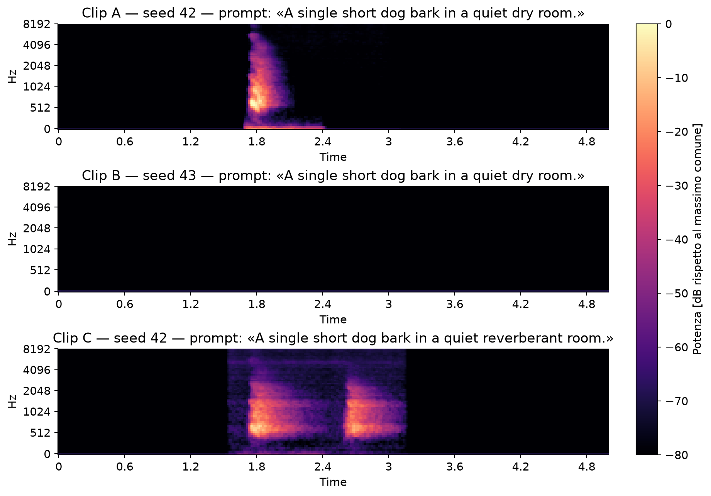
L’esperimento mette subito in luce due lezioni fondamentali:
Variabilità rispetto al seed (A vs B): pur avendo lo stesso identico prompt, il Clip B (seed 43) ha un picco di circa \(-73{,}5\,\text{dBFS}\), risultando quasi silenzioso! In un esperimento scientifico non si scarta il tentativo sfortunato (cherry-picking), ma si documenta la variabilità del generatore su più seed.
Rispetto parziale dei vincoli (A vs C): passando da "dry room" a "reverberant room" a parità di seed 42, il Clip C mostra effettivamente una coda energetica più diffusa, ma presenta due eventi ravvicinati anziché il singolo abbaio richiesto da "A single short dog bark".
5.9 Sintesi e collegamento dei risultati
La tabella seguente riassume i mattoni concettuali, le operazioni e le verifiche sperimentali che chiudono il capitolo:
Riduce il latente a una sequenza di indici interi discreti su cui può operare un generatore autoregressivo (MusicGen)
Diffusione latente (AudioLDM)
\(\mathbf{x}_t = \sqrt{\bar\alpha_t}\,\mathbf{x}_0 + \sqrt{1-\bar\alpha_t}\,\boldsymbol{\varepsilon} \;\longleftrightarrow\; \text{denoising in } N \text{ passi}\)
I passi di diffusione raffinano l’intera mappa latente (non sono i secondi del brano!); variare una sola variabile alla volta (seed vs prompt)
Tre idee per chiudere il percorso
Dal segnale fisico ai modelli generativi, le domande fondamentali restano le stesse: anche davanti a una rete neurale da centinaia di milioni di parametri, per capire che cosa sta accadendo usiamo sempre gli strumenti dei Capitoli 1–4: forma d’onda, livello in dBFS, spettrogramma Mel, inviluppo temporale e ascolto critico a guadagno comune.
Ogni rappresentazione è un compromesso esplicito: gli MFCC e CLAP comprimono per riconoscere e confrontare; i VAE (RAVE) e i codec (EnCodec) comprimono per ricostruire e manipolare; sapere che cosa è stato scartato (come la fase o l’ordine temporale) evita di chiedere a un modello ciò che la sua rappresentazione non può dare.
Il metodo sperimentale viene prima della complessità del modello: isolare una variabile alla volta (come seed e prompt in AudioLDM o il test fuori dominio in RAVE) e conservare i metadati di provenienza trasforma l’uso dell’intelligenza artificiale da semplice dimostrazione a ingegneria verificabile.
Il laboratorio associato a questo capitolo si svolge sui notebook della Lezione 5, che utilizzano i materiali reali precalcolati in lab-2026/materiali/ e le funzioni di audiolab (documentate in Appendice B — Manuale delle funzioni audiolab):
I quattro esempi ed esercizi paradigmatici ripercorrono nell’ordine i temi del capitolo:
Esercizio
Tema
Funzioni audiolab principali
Esercizio 1 — Classificazione zero-shot e rimozione della descrizione corretta (CLAP)
Calcolo della matrice di similarità coseno audio-testo (\(3\times 4\)) e verifica dell’effetto della rimozione della classe corretta sui punteggi e sulla softmax
Esercizio 3 — Traiettoria timbrica lungo il morphing vocale
Ascolto dell’interpolazione latente \(\mathbf{z}_\alpha = (1-\alpha)\mathbf{z}_1 + \alpha\mathbf{z}_2\) e tracciamento della distanza euclidea MFCC dai due capi per \(\alpha \in [0, 1]\)
Organizzazione di una sessione riproducibile in 60 minuti
Tempo
Attività
Consegna parziale
15 min
Esplorare gli embedding CLAP e verificare la sensibilità alle frasi candidate (Es. 1)
Matrice di similarità e confronto tra 4 e 3 frasi candidate
15 min
Misurare e ascoltare la ricostruzione RAVE dentro dominio (voce1, voce2) e fuori dominio (abbaio) (Es. 2)
Tabella delle metriche (ritardo, inviluppo, mel) e commento uditivo
15 min
Analizzare la catena di morphing latente tra due voci e individuare il punto di svolta timbrico (Es. 3)
Grafico delle distanze MFCC in funzione di \(\alpha \in [0, 1]\)
15 min
Confrontare i tre clip generati da AudioLDM (A, B, C) su livelli, spettrogrammi e vincoli del prompt (Es. 4)
Misure in dBFS, spettrogrammi Mel e discussione di seed vs prompt
5.12 Domande di autocomprensione
Le domande propongono risposte aperte brevi su concetti, metodi e aspetti tecnici. Le formule sono riportate quando aiutano a precisare il concetto. Le risposte sono richiudibili per consentire prima una verifica autonoma.
1. Perché riconoscimento, rappresentazione, ricostruzione e generazione non sono compiti equivalenti?
Mostra la risposta
Riconoscere significa attribuire un significato o un’etichetta; rappresentare significa produrre caratteristiche utili a un compito. Ricostruire mira a riprodurre un ingresso, mentre generare produce nuovi esempi plausibili. Ogni obiettivo privilegia informazioni diverse: una buona rappresentazione per riconoscere può perdere dettagli necessari alla ricostruzione.
2. Che cos’è un embedding audio e perché due suoni vicini nello spazio degli embedding non devono avere waveform simili?
Mostra la risposta
È un vettore appreso che riassume proprietà utili all’obiettivo di addestramento. La vicinanza può esprimere somiglianza semantica, per esempio lo stesso evento registrato in ambienti diversi, senza somiglianza campione per campione. Né la distanza né le singole coordinate hanno un significato universale indipendente dal modello.
3. Qual è la differenza fra estrarre embedding con un encoder congelato e fare fine-tuning?
Mostra la risposta
Con encoder congelato si mantengono fissi i pesi e si usa il vettore come ingresso per un classificatore o una ricerca per similarità. Nel fine-tuning si aggiornano alcuni o tutti i pesi sul compito bersaglio. Cambiano costo, dati necessari e rischio di overfitting; il confronto richiede lo stesso protocollo di valutazione.
4. Come può CLAP confrontare audio e testo in uno spazio condiviso e come si definisce la similarità coseno?
Mostra la risposta
Due encoder proiettano audio e testo in vettori \(a,t\) dello stesso spazio; il training contrastivo favorisce coppie corrispondenti rispetto a coppie non corrispondenti. La similarità coseno è \(s(a,t)=\frac{a^\top t}{\|a\|_2\|t\|_2}\) per vettori non nulli. Permette di confrontare modalità diverse, senza essere automaticamente una probabilità calibrata né una trascrizione.
5. Quando un confronto audio-testo è zero-shot e perché il punteggio più alto non dimostra che una descrizione sia vera?
Mostra la risposta
È zero-shot rispetto al compito bersaglio quando non si addestra un classificatore supervisionato specifico su quelle classi. La scelta avviene fra le descrizioni candidate e dipende dalla loro formulazione e dal pretraining. Similarità e probabilità normalizzate fra candidati non sono automaticamente probabilità calibrate di verità né garanzie di assenza di bias.
6. Come si esprime la scaled dot-product attention e quale ruolo svolgono query, key e value?
Le righe di \(Q\) sono query, quelle di \(K\) key di dimensione \(d_k\), quelle di \(V\) value. La softmax per riga trasforma le compatibilità in pesi non negativi di somma uno, con cui si combinano i value. La scala \(\sqrt{d_k}\) limita la crescita dei prodotti scalari.
7. Quali differenze distinguono self-attention, cross-attention e multi-head attention?
Mostra la risposta
Nella self-attention query, key e value derivano dalla stessa sequenza. Nella cross-attention le query interrogano una rappresentazione proveniente da un’altra sequenza o modalità. La multi-head attention calcola più relazioni in sottospazi appresi e ne combina i risultati, senza garantire che ogni testa abbia un ruolo interpretabile distinto.
8. Perché un transformer deve rappresentare la posizione dei token e quale funzione hanno le parti del blocco oltre all’attention?
Mostra la risposta
L’attention priva di informazioni posizionali non distingue adeguatamente l’ordine della sequenza. Codifiche o relazioni posizionali lo rendono disponibile al modello. La rete feed-forward trasforma le rappresentazioni di ciascuna posizione; connessioni residue e normalizzazioni facilitano il flusso dell’informazione e l’addestramento di molti blocchi.
9. Quali differenze comporta usare patch di spettrogramma, segmenti di waveform oppure token di un codec come ingresso?
Mostra la risposta
Le patch rappresentano strutture tempo-frequenza; la waveform conserva l’informazione temporale campionata ma può produrre sequenze molto lunghe. I token del codec sono una rappresentazione discreta compressa e dipendono dalla qualità della codifica. La scelta modifica lunghezza della sequenza, costo computazionale, dettaglio conservato e compiti più naturali.
10. Qual è il ruolo del collo di bottiglia in un autoencoder e perché un punto latente arbitrario non genera necessariamente un suono plausibile?
Mostra la risposta
Un autoencoder calcola \(z=E_\phi(x)\) e \(\hat x=D_\theta(z)\), ottimizzando una loss di ricostruzione, per esempio \(\|x-\hat x\|_2^2\). Il collo di bottiglia vincola la rappresentazione e impone una selezione dell’informazione. Senza ulteriori vincoli, la distribuzione dei latenti non è regolare in tutto lo spazio: punti arbitrari possono quindi produrre risultati non plausibili.
11. Come viene campionato il latente di un VAE e quale compromesso esprime la sua funzione obiettivo?
Mostra la risposta
Per un encoder gaussiano, \(z=\mu_\phi(x)+\sigma_\phi(x)\odot\varepsilon\), con \(\varepsilon\sim\mathcal N(0,I)\) e \(\odot\) prodotto componente per componente. Una loss da minimizzare è
Il primo termine favorisce la ricostruzione; il secondo avvicina la distribuzione dell’encoder al prior \(p(z)\), spesso normale standard. La regolarizzazione favorisce il campionamento, senza garantire interpretabilità o interpolazioni sempre plausibili.
12. Come si ottengono token discreti da un codec neurale e perché un codebook non basta a generare musica?
Mostra la risposta
L’encoder produce vettori che vengono quantizzati in indici di uno o più dizionari appresi; il decoder li trasforma nuovamente in audio. Il codebook definisce i simboli, ma non quali sequenze siano plausibili: serve un modello generativo. I token audio non sono necessariamente note musicali e la codifica può perdere informazione.
13. Come si fattorizza la distribuzione di una sequenza in un modello autoregressivo e quale funzione ha la maschera causale?
Mostra la risposta
Con condizionamento \(c\), la distribuzione si fattorizza come \(p(z_{1:T}\mid c)=\prod_{t=1}^{T}p(z_t\mid z_{<t},c)\). Si campiona un token e lo si aggiunge al contesto. La maschera causale impedisce di leggere token futuri durante il training; un decoder converte poi i codici in audio. Un transformer non è necessariamente autoregressivo.
14. Che cosa cambiano temperatura e seed e come si usano in un confronto fra generazioni?
Mostra la risposta
Per logit \(\ell_i\) e temperatura \(\tau>0\), \(p_i(\tau)=e^{\ell_i/\tau}/\sum_je^{\ell_j/\tau}\). Temperature basse concentrano le scelte, alte rendono la distribuzione più uniforme, senza cambiare i pesi del modello. Il seed inizializza la casualità: si fissano gli altri parametri e si ripete su più seed, senza assumere identità fra versioni e dispositivi.
15. Come differiscono corruzione durante l’addestramento e generazione in un modello di diffusione? I passi di diffusione corrispondono ai secondi dell’audio?
Mostra la risposta
Un esempio di corruzione è \(x_t=\sqrt{\bar\alpha_t}\,x_0+\sqrt{1-\bar\alpha_t}\,\varepsilon\), con \(\varepsilon\sim\mathcal N(0,I)\) e \(\bar\alpha_t\) quota di segnale residua. La rete impara informazioni utili a invertire la corruzione; in generazione si parte dal rumore e si aggiorna una rappresentazione intera. L’indice \(t\) è un passo di diffusione, non il tempo della registrazione.
16. Perché generare in un latente compresso e quale differenza c’è fra questo latente e l’embedding del prompt?
Mostra la risposta
Il latente compresso riduce la quantità di dati da elaborare, ma lega la qualità finale ai limiti del decoder. È la rappresentazione che viene generata e poi decodificata. L’embedding del prompt fornisce invece il condizionamento semantico: orienta il risultato senza contenere tutti i dettagli necessari a ricostruirne la waveform.
17. Transformer e diffusione sono alternative incompatibili? Quali ruoli svolgono CLAP, EnCodec, MusicGen e AudioLDM?
Mostra la risposta
No: un transformer è un’architettura e può essere usato anche dentro un procedimento di diffusione. CLAP confronta audio e testo; EnCodec codifica e ricostruisce audio; MusicGen genera sequenze di token audio in modo autoregressivo; AudioLDM genera tramite diffusione latente condizionata. Rappresentazione, architettura e algoritmo generativo sono livelli distinti.
18. Perché generare uno spettrogramma non equivale ad aver già generato la waveform? Qual è la differenza fra Griffin–Lim e un vocoder neurale?
Mostra la risposta
Uno spettrogramma di modulo non conserva la fase e una rappresentazione Mel raggruppa anche le frequenze. Griffin–Lim stima iterativamente una fase compatibile con il modulo; un vocoder neurale sintetizza la waveform dal condizionamento per cui è stato addestrato. La qualità finale dipende quindi anche da ricostruzione e decodifica, non soltanto dal generatore.
19. Aumentare passi di inferenza o guidance garantisce un audio migliore? Come si progetta una verifica?
Mostra la risposta
Più passi aumentano il costo e possono dare benefici decrescenti; più guidance può rafforzare l’aderenza al prompt ma ridurre varietà o introdurre artefatti. Si varia un parametro alla volta su prompt e seed controllati, misurando separatamente aderenza, qualità e costo. Un negative prompt non garantisce l’assenza degli eventi esclusi.
20. Quali verifiche servono prima di concludere che un generatore produce risultati buoni e controllabili?
Mostra la risposta
Servono ascolti su più prompt e seed, controllo di eventi richiesti, coerenza temporale, naturalezza e artefatti, insieme a costo e durata effettiva. Vanno conservati modello, versione e parametri. La classe predetta da una CNN o una similarità CLAP sono indizi parziali, non sostituiscono l’ascolto né bastano a dimostrare qualità generale.
5.13 Slide della lezione
Sfoglia le slide direttamente qui sotto (frecce ←→ o barra spaziatrice per avanzare, F per lo schermo intero) oppure aprile in una scheda dedicata.
Lezione 5 — AI moderna per il suono: rappresentazioni e generazioneClicca sulle slide e usa ← → per navigare · tasto F per schermo intero · S per le note
Riepilogo compatto dei quattro ruoli dell’AI audio moderna, delle architetture (CLAP, RAVE, EnCodec, MusicGen, AudioLDM), delle formule essenziali e delle API audiolab della Lezione 5, consultabile qui sotto oppure apribile e stampabile in una scheda separata.
Tre modalità di riuso:(1) Zero-shot (confronto diretto audio–testo nello spazio condiviso di CLAP senza riaddestrare), (2) Linear probing (classificatore lineare leggero sopra embedding congelati), (3) Fine-tuning (aggiornamento dei pesi dell’encoder).
3. Comprimere e ricostruire: Autoencoder, VAE (RAVE) e Codec (EnCodec)
Concetto / Modello
Meccanismo e formule essenziali
Uso pratico
Autoencoder classico
\(z = E_\phi(x), \;\hat{x} = D_\theta(z)\), minimizza \(\|x - \hat{x}\|\); il collo di bottiglia comprime l’informazione